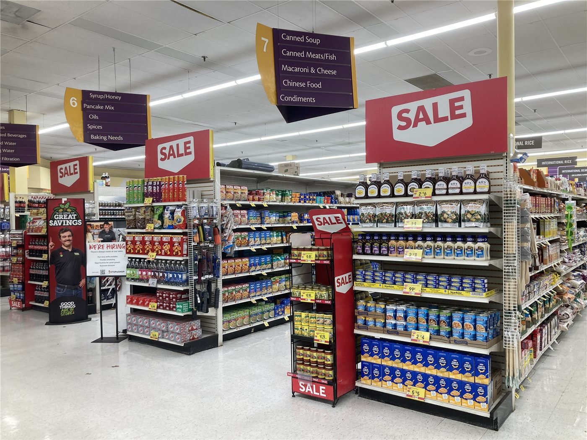

맥도날드, 가맹점에 85억달러 지원… 매장 개편·생성형 AI 도입 「NEXT」 전략
맥도날드가 비용 상승에 대응하고 치킨·음료 시장에서 입지를 넓히기 위해 2036년까지 가맹점에 약 85억달러를 지원하는 새 전략 「NEXT」를 내놨다. 매장 디자인 개편과 운영 단순화, 생성형 AI 기반 시스템 도입이 핵심이다.
양념자 기자 · 2026.09.24
橋경제·문화·스포츠

미국 맥도날드가 23일 투자자 행사에서 새 성장 전략 「NEXT」를 발표했다. 2036년까지 가맹점주에게 약 85억달러를 지원해 매장을 현대화하고 운영을 개선하며 방문 고객을 늘리겠다는 내용이다.
광고 문의 · 300×250전략은 음식의 품질과 고객 경험, 매장 운영, 서비스 기준을 함께 높이는 것을 목표로 한다. 치킨과 음료 부문 공략, 단백질 중심 신메뉴도 포함됐다.
임대료 감면과 자본 지원
지원액 가운데 약 50억달러는 2030년까지 임대료 감면과 자본 지원 형태로 집행될 예정이다. 가맹점은 시간을 두고 매장당 약 80만달러를 추가로 투자해야 하지만, 회사가 그 일부를 부담하는 구조다.
매장 부문에는 운영 단순화, 디자인 개편, 일관된 실행과 함께 생성형 AI를 활용한 「ArchIQ」 시스템 도입이 담겼다. 회사는 개선이 완료되면 미국 평균 매장의 연간 현금흐름이 약 10만달러 늘고, 가맹점의 투자 회수 기간은 약 4년이 될 것으로 추산했다.
외식업 전반의 숙제
인건비와 식재료비가 오르는 가운데 외식 프랜차이즈 업계는 가격 인상과 고객 이탈 사이에서 줄타기를 하고 있다. 본사가 가맹점 투자를 직접 떠받치는 이번 방식은 한국과 대만의 프랜차이즈 업계에도 참고 사례가 될 전망이다. 인천·서울의 화교 음식점들 역시 인건비와 주문 자동화 사이의 셈법을 고민하고 있다.
출처·참고 (사실 확인용 — 본문은 직접 재작성)
· 맥도날드 투자자 행사 발표
· QSR매거진·CIO다이브·AP 보도 종합
· 맥도날드 투자자 행사 발표
· QSR매거진·CIO다이브·AP 보도 종합